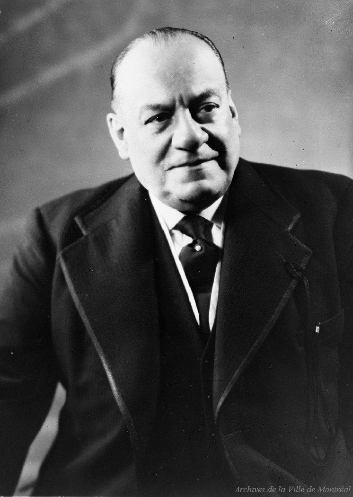

The Alarm Sequence — Le Canada, Feb. 15, 1918
7:50 PM
Private alarm No. 419 sounds from the Grey Nuns
7:51 PM
Second alarm — calls the second section of the brigade
8:07 PM
Third alarm — calls the reserve. The entire brigade mobilized.
10:30 PM
Firefighters report 38 small bodies recovered. The count will rise.
Caserne 10 was built in 1931 as part of Mayor Camillien Houde's Depression-era public works program — one of twenty Art Deco civic buildings commissioned to provide employment.
Its restrained limestone facade features a relief depicting symbols of Montreal: ships, a church dome, and an Art Deco skyscraper.
It won first prize from the Royal Architectural Institute of Canada in the public building category.

Mayor Camillien Houde (1889–1958) — commissioned twenty Art Deco civic buildings during the Depression as a public works employment program.
Secondary Sources
Osborne, Brian S. "Montreal's Fire Stations: An Illustrated Overview with a Focus on Surviving 19th-Century Structures." JSSAC 35, no. 2 (2010): 21–46.
Redfern, Elizabeth Firth. "Montreal Fire Department, 1765–2005." MA thesis, Concordia University, 2006.
McRobie, William Orme. Fighting the Flames! Montreal: "Witness" Printing House, 1881. Canadiana.ca, CIHM no. 09495.
IMTL. "Harold Ernest Shorey / Douglas Ritchie." Index des Ressources sur le Patrimoine de Montréal.
Ville de Montréal. "Rue de la Police." Toponymie de Montréal.
Archival & Audiovisual
Archives de Montréal — Photographic Collection: Fire Department. Refs. Z-419, Z-441, Z-447.
Service de sécurité incendie de Montréal — sim.montreal.ca
McGill University Library. "Historical Maps of Montreal." Digital Collections.
Montreal Firefighters Memorial. Côte-des-Neiges Cemetery, Mount Royal. Erected 1868.